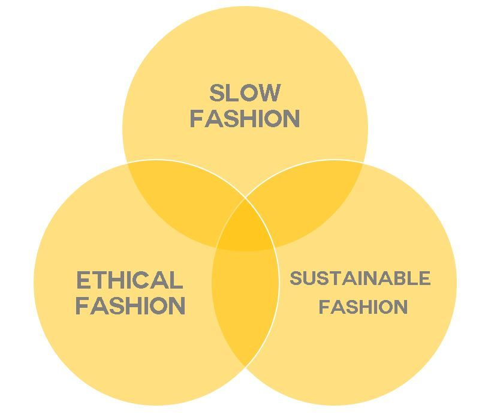

More on fashion that is slow, sustainable and ethical
Sustainable fashion and its meaning seems to have gotten lost in translation somewhere along the line. While greenwashing is primarily to blame for this, it doesn’t help that there are a growing number of terms that everyone has to now keep up with to stay in the know — and ‘slow fashion’ happens to be one of them. So, is there a difference between the two? And is one better than the other?
Keep reading to find out.
Key Takeaways:
Slow fashion is the exact opposite of everything that fast fashion stands for; it promotes conscious consumption of made to last pieces that outlive trends Slow fashion challenges the obsession with mass production and paves the way for a new and better manner of consuming fashion Sustainable fashion can be considered a change in the ways of thinking, wearing, and enjoying fashion that values diversity, prosperity, and well-being of both people and the environment Just like slow fashion, sustainable fashion questions the status quo of the industry that still prioritises profit over vital social and environmental concerns
Slow fashion Slow fashion is the complete antithesis to fast fashion; the concept promotes a slower, more sustainable approach to wearing clothes. It involves thrift shopping, second-hand clothes, upcycling old garments, shopping from small quantity producers to quality pieces with a longer lifespan. In essence, it embodies everything that fast fashion lacks.
The term ‘slow fashion’ was coined by Kate Fletcher, Professor of sustainability, design and fashion at the Centre for Sustainable Fashion, after being inspired by the slow food movement. Like the slow food movement that advocates food prepared with care, using high-quality local ingredients, Prof. Fletcher saw a similar need for a slower pace in the fashion industry. According to Prof. Fletcher, slow fashion challenges the consumerist obsession with mass production and globalised style. Slow fashion represents a hyper-futuristic vision of sustainability. It accounts for the dire long-term effects of fast fashion consumption by focusing on the quality of production & final products that have the most negligible impact on our environment.
This holistic approach considers the product’s complete lifecycle with an ethical and sustainable system that benefits both consumers and producers. So, when a brand takes time to produce beautiful clothes that are made to last with a social conscience, it abides by the rules of slow fashion. Sustainable fashionWhile sustainability has no widely held definition, sustainable fashion can be considered a practice of design, production, and communication that values diversity, prosperity and well-being of both people and the environment. Sustainable fashion questions the industry’s status quo that still prioritises profit over pressing social and environmental concerns. While the invention of eco-conscious textiles and materials has been on the rise, these efforts remain insignificant if the production rates, consumption, and disposal of fashion constantly keep increasing. To make a true impact in sustainable fashion, we have to stop focusing on quick ways and instead commit to long-term solutions that tackle the underlying causes of environmental waste and social costs of fashion.
How can we achieve this? A radical “unlearning of fashion-as-we-know-it” and finding new and richer ways of enjoying and giving value to fashion could be the answer.
Endorsing brands that are sustainable and practice slow fashion ways of production could be a good start. Slow fashion is a piece of the sustainable fashion puzzle, and sustainability doesn’t exist without it. Click here for clothing brands that have these values!